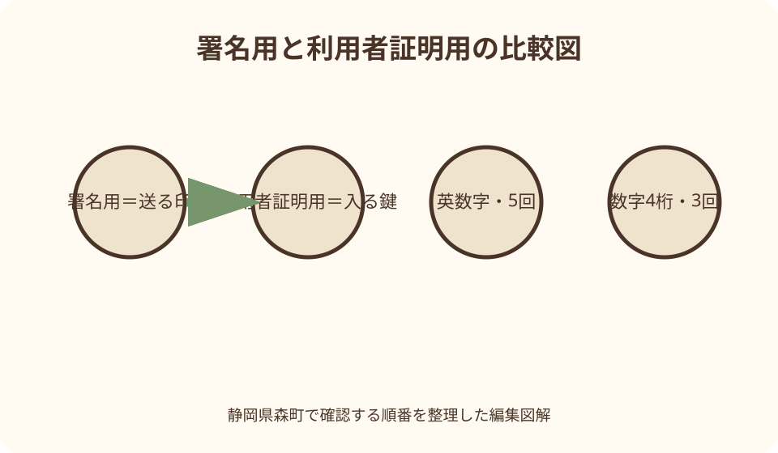
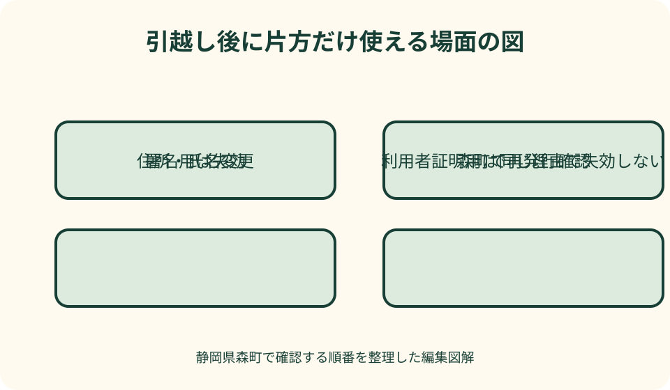

行政手続・証明書｜最終確認 2026-08-10
静岡県森町でマイナンバーカードの2種類の電子証明書を見分ける｜用途・暗証番号・失効
マイナンバーカードのICチップには、役割の異なる二つの電子証明書を搭載できます。署名用は電子文書を本人が作成・送信したことを示し、利用者証明用はサービスへログインした人が本人であることを示します。英数字と数字四桁、五回と三回、基本四情報を持つか持たないかという差を知ると、エラー時にどちらを森町で確認すべきか判断できます。

編集イラスト二つの証明書は署名とログインを分担する
署名用電子証明書は、インターネットで作成・送信した電子文書が本人によるもので、送信後に改ざんされていないことを確かめるために使います。紙の申請で署名や押印をする場面に近い役割です。単にウェブサイトへ入るための合鍵ではありません。
利用者証明用電子証明書は、オンラインサービスを利用している人が、カード名義人本人であることを証明します。マイナポータルへのログインや、森町のコンビニ交付で本人・同一世帯員の住民票を取得するときが分かりやすい例です。文書へ電子署名を付ける役割とは区別します。
デジタル庁は、公的個人認証サービスがマイナンバーカードのICチップ内の電子証明書を利用し、マイナンバーそのものは利用しないと説明しています。カード裏面の12桁を入力して電子証明書を使うわけではありません。カード現物または対応するスマートフォン機能と暗証番号等で処理します。
サービスによっては、最初に利用者証明用でログインし、申請を送信する最後に署名用を求めることがあります。途中まで進めたから一種類だけで完了するとは限りません。利用予定の公式操作説明で、ログインと送信の各段階を確認します。
暗証番号は英数字6〜16文字と数字4桁
署名用電子証明書の暗証番号は英数字6〜16文字です。アルファベットと数字を組み合わせ、アルファベットは大文字で扱います。数字四桁を入力する欄ではありません。e-Taxの送信直前などで長い暗証番号を求められたら、署名用の可能性を確認します。
利用者証明用電子証明書の暗証番号は数字四桁です。森町のコンビニ交付ページでも、カード取得時に設定した四桁が必要だと案内しています。住民基本台帳用や券面事項入力補助用にも四桁を設定するため、同じ数字にした人と別々にした人がいます。
署名用は五回連続、利用者証明用は三回連続で誤入力するとロックします。回数は一つの端末だけでリセットされるものではありません。コンビニで二回間違えた後、自宅のスマートフォンで試し直すといった使い方をせず、どの暗証番号かを確認します。
暗証番号を忘れた場合は、森町役場で再設定するほか、もう一方の暗証番号が分かり電子証明書が有効などの条件を満たせば、JPKIアプリと対応コンビニ端末で初期化できる場合があります。二つとも不明なら店舗で解決しようとせず、カードを持って町窓口へ相談します。
署名用には基本4情報、利用者証明用には記録しない
署名用電子証明書には、氏名、住所、生年月日、性別という基本四情報が記録されます。サービス提供者は、電子署名の有効性とあわせて、その文書を作成・送信した本人の情報を確認できます。カード券面の画像を丸ごと送るのとは異なる本人確認です。
利用者証明用電子証明書には、氏名、住所、生年月日、性別は記録されません。サービスごとに利用者本人であることを認証する役割であり、ログイン時に四情報を相手へ示す証明書ではありません。この差が、引越しや婚姻時の失効条件へつながります。
電子証明書の利用は、カード裏面のマイナンバーを相手へ送ることと同義ではありません。民間サービスが公的個人認証を使う場合も、法令に基づく認定や検証の仕組みがあります。『電子証明書を使うので個人番号の写真も送ってください』という依頼は、公式窓口で必要性を確認します。
券面事項入力補助機能もICチップにありますが、二つの電子証明書とは別の機能です。住所等を申込画面へ読み出す場面で使われても、それだけで電子署名が付くわけではありません。画面に出た機能名を見て、署名・ログイン・券面入力のどれかを分けます。
住所・氏名変更では署名用だけが同じ理由で失効する
引越し、婚姻などで氏名や住所が変わると、署名用電子証明書に記録された基本四情報と住民票が一致しなくなります。そのため、JPKIポータルは署名用が失効すると説明しています。転入届や転居届、婚姻後の氏名変更にあわせて、新しい署名用の発行を確認します。
利用者証明用電子証明書には基本四情報が記録されないため、引越しや婚姻という理由だけでは失効しないと国のFAQにあります。ただし、マイナンバーカード券面の住所・氏名変更は必要です。利用者証明用が残るからカード手続を省略できるわけではありません。
森町の転入届ページでも、カード継続利用と署名用電子証明書の住所変更を分けて案内しています。本人以外がカードを持参した場合、署名用の発行は代理関係によって即日できない場合があります。住民票の転入が終わればオンライン署名も直ちに戻るとは限りません。
氏名・住所変更後にマイナポータルへログインできても、電子申請の送信で止まることがあります。利用者証明用のログインは有効でも、署名用が失効しているという組合せがあり得ます。エラーが出た段階を記録し、森町へ署名用の再発行状況を確認します。

有効期限はカード本体と別に確認する
電子証明書の有効期限は、カード本体の券面有効期限と同じとは限りません。カード本体が本人確認書類として有効でも、ICチップ内の電子証明書だけ期限切れになることがあります。通知書では、カード更新か電子証明書更新かを確認します。
二つの電子証明書は通常同じ時期に更新対象になりますが、氏名・住所変更による署名用再発行などで発行日が異なる場合があります。『前回二つとも更新したはず』という記憶だけで判断せず、窓口や対応ソフトで現在の有効性を確認します。
期限切れになると、署名用を使う電子申請や利用者証明用を使うログイン・コンビニ交付がそれぞれ利用できなくなります。一方、カード本体の期限が残れば、顔写真付き本人確認書類としての扱いは別に判断されます。電子サービス停止とカード全体の失効を混同しません。
森町で電子証明書を更新した後、町のコンビニ交付は翌営業日から利用できるという案内があります。窓口で書込みが完了しても、外部サービスへ即時反映するとは限りません。申告や証明書提出の期限から余裕を持って更新します。
良い点
二種類を分けて理解する良い点は、エラーの場所から原因を推測しやすくなることです。ログイン時の四桁なら利用者証明用、送信時の英数字なら署名用という見当がつきます。カード全体が壊れたと決めつけず、必要な証明書だけを森町へ説明できます。
暗証番号の残り回数を守ることにもつながります。四桁を二回誤った時点で止まり、署名用の控えを四桁欄へ入れない判断ができます。別端末で試す前に、サービス名と入力欄を確認する習慣を持てます。
引越しや婚姻後の動作差も理解できます。マイナポータルへ入れるのに電子申請を送れない場合、利用者証明用は有効で署名用が失効している可能性を考えられます。再発行が必要な証明書を具体的に尋ねられます。
家族の支援でも、暗証番号そのものを共有せずに済みます。『長い英数字を使う送信』『四桁を使うログイン』という用途だけを伝え、本人が入力します。家族は窓口時間、通知書、カードの持参を手伝う役割に集中できます。
注文したい点
注文したいのは、画面に単に『暗証番号』や『電子証明書エラー』と表示されると、どちらの証明書か分かりにくいことです。サービス提供者には、署名用か利用者証明用か、英数字か四桁か、期限切れかロックかを区別できる表示を期待します。
森町公式では、コンビニ交付に利用者証明用が必要なこと、転入時に署名用の住所変更が必要なことが別ページにあります。二つを比較する町独自の一覧があれば、住民は国の複数ページを行き来せず、自分の利用場面から窓口へ進めます。
電子証明書の更新通知も、カード本体との違いに加えて二種類の機能停止を具体的に示す必要があります。『電子証明書が切れます』だけでは、普段使わない人が影響を判断できません。コンビニ交付、ログイン、電子署名の例を分けると準備しやすくなります。
代理手続はさらに複雑です。利用者証明用の更新、署名用の住所変更、暗証番号再設定では必要な照会書や本人意思確認が異なる場合があります。家族がカードと番号を預かる前に、手続ごとの代理条件を一画面で確認できる案内が望まれます。
森町のコンビニ交付は利用者証明用を使う
森町のコンビニ交付で住民票や印鑑登録証明書を取得するときは、利用者証明用電子証明書が搭載されたカードと数字四桁を使います。署名用の英数字を端末へ入れる場面ではありません。証明書発行と電子申請の署名を区別します。
四桁を三回連続して誤るとロックされ、森町役場で再設定が必要になるという町の案内があります。署名用の英数字を知っている場合は国のコンビニ初期化サービスを使えることもありますが、通常の証明書交付メニューでロック解除はできません。
コンビニ交付で発行できる証明書、対象者、時間、休止日は森町公式で当日に確認します。利用者証明用が有効でも、システムメンテナンス、転入直後の反映待ち、対象外証明書という理由で取得できないことがあります。四桁エラーと決めつけません。
顔認証マイナンバーカードを利用している人は、暗証番号を使うコンビニ交付などのサービス範囲が通常カードと異なります。健康保険証利用ができることを根拠に、利用者証明用四桁のサービスも使えると考えず、カード種類を森町へ伝えます。
e-Taxや電子申請は署名用を送信段階で使う
e-Taxなどの電子申請では、申請データへ本人の電子署名を付ける場面で署名用電子証明書を使います。マイナポータルへ四桁でログインできた後、送信時に英数字を求められるのは、証明書の役割が切り替わったためです。
英数字を五回連続で誤ると署名用がロックします。アルファベットの小文字入力、数字との見間違い、別サービスのパスワードを入れていないか確認します。申告期限直前に初めて入力せず、カードと電子証明書の有効性を早めに試します。
署名用には基本四情報が記録されるため、転居や氏名変更後は再発行が必要です。変更届を提出しただけで以前の署名用が新住所へ書き換わるわけではありません。森町役場で新しい署名用が発行されたか、暗証番号も含めて確認します。
署名用が使えない場合、電子申請の提出先が紙申請、窓口、別の本人確認を認めるかを確認します。森町役場が他機関の申告期限を延長することはできません。カード復旧と提出期限対応を別に進めます。

年齢・カード種類・代理人で搭載状況が異なる
すべてのマイナンバーカードに二種類が必ず搭載されているとは限りません。署名用は原則として15歳未満や成年被後見人には発行されない扱いがあるため、子どものカードへ大人と同じ英数字があると思わないようにします。現在の年齢と発行状況を窓口で確認します。
カード申請時に電子証明書不要を選んだ、後から失効申請をした、顔認証カードへ切り替えたなどの事情でも搭載機能が変わります。券面を見ただけでは証明書の有効性が分からないことがあります。過去の申請控えと現在使いたいサービスを森町へ伝えます。
本人が窓口へ行けず代理人が発行・更新・再設定を頼む場合、手続ごとに照会回答書や封かんした暗証番号などが必要になる可能性があります。家族だから本人と同じ日に処理できるとは断定せず、署名用か利用者証明用かを明示して町へ問い合わせます。
スマートフォンにも電子証明書を搭載できるサービスがありますが、カード内の証明書と端末内の証明書の管理を混同しません。機種変更や紛失時の失効、再設定は専用の案内に従います。カードの証明書を更新すれば古いスマートフォンも自動的に安全になると決めつけません。
エラー表示から確認先を選ぶ
ログイン画面で四桁を求められ、『暗証番号が違う』と出た場合は、利用者証明用の可能性を確認します。二回誤ったら止め、設定控えを確認します。ロック表示なら時間経過で戻るとは考えず、森町窓口または条件付き初期化を検討します。
申請送信時に英数字を求められ、住所変更後や婚姻後に『証明書が無効』と出た場合は、署名用の失効を疑います。暗証番号を変えるだけで直るとは限りません。基本四情報変更日と町での再発行有無を確認します。
『有効期限切れ』なら、二つのどちらか、または両方の更新が必要です。カード本体期限も同時に確認します。通知書がなくても窓口相談はできますが、持ち物と予約の要否を森町の当日案内で確定します。
『カードを読み取れない』なら、電子証明書以前にICチップ、スマートフォンのNFC位置、カードケース、端末障害を切り分けます。読み取り不良を暗証番号誤りと思い込み、何度も番号を入れません。別の対応端末や森町窓口でカード状態を確認します。
代案・結論
署名用が失効して電子申請できない場合は、森町で再発行を相談すると同時に、提出先へ紙・窓口等の代替経路を確認します。利用者証明用でログインできることを、署名送信も可能という証拠にしません。期限のある手続をカード復旧一本へ預けないことが大切です。
利用者証明用がロックしてコンビニ交付できない場合、森町役場窓口で必要な証明書を取得する方法があります。暗証番号再設定と住民票取得を同日に行えるか、受付時間を確認します。提出期限が先なら証明書取得を優先します。
二つとも暗証番号が分からない、電子証明書期限も不明、住所変更もしたという場合は、コンビニやアプリで個別に試さず、カードを持って森町役場へ進みます。利用目的を伝え、搭載状況、有効性、ロック、署名用再発行を順に確認します。
結論は、ログインなら利用者証明用・四桁・三回、文書送信なら署名用・英数字・五回という軸です。署名用は基本四情報変更で失効し、利用者証明用は同じ理由では失効しません。カード本体期限とは別に管理すれば、必要な窓口手続を絞れます。
大石の視点
大石の視点では、電子証明書を難しい技術用語として覚えるより、『入る鍵』と『送る印』に分けます。利用者証明用はサービスへ入る鍵、署名用は文書を本人が送ったと示す印です。この二語なら家族にも役割を説明しやすくなります。
森町で引越したとき、役場で住民票だけ変わればすべて完了と思いがちです。しかしオンライン手続を使う人には、カード券面、継続利用、署名用再発行という続きがあります。窓口で『e-Taxを使う』と具体的に伝える方が、必要機能を確認しやすくなります。
家族の暗証番号を知ることを支援にしません。本人が入力できるよう用途を整理し、通知書を保管し、森町へ送迎するだけでも十分です。代理人が必要なら封かん書類の方法を確認します。秘密を広げず、手続の順番を共有します。
記録するのは番号そのものではなく、署名用の発行日、利用者証明用の更新日、次の期限、使うサービスです。『四桁は再設定済み、英数字は住所変更後に再発行』と残せば、次回のエラーで家族が判断できます。
二種類を確認する実用チェック表
一列目にサービス名を書き、ログインだけか、電子文書の送信まで行うかを分けます。コンビニ交付は利用者証明用、e-Tax送信は署名用というように、公式操作案内から必要証明書を転記します。想像で欄を埋めません。
二列目に暗証番号の種類を書きます。数字四桁か、英数字6〜16文字かだけを記録し、実際の番号は書きません。エラーが出たら誤入力回数、ロック表示、日時を残します。別端末へ移る前に入力を止めます。
三列目に有効性へ影響する出来事を書きます。電子証明書期限、カード本体期限、引越し日、氏名変更日、町窓口での再発行日です。署名用だけが基本四情報変更で失効する差を確認できます。
四列目に次の行動を書きます。森町で更新、署名用再発行、暗証番号再設定、サービス側メンテナンス確認、提出先の代替手段です。エラーを一括して『カード不良』と書かず、原因候補ごとに担当を分けます。
森町窓口へ伝える五つの情報
第一に、使えなかったサービス名と操作段階を伝えます。マイナポータルへ入れない、e-Taxの送信で止まる、コンビニ交付端末で四桁を誤ったという具体性が必要です。『電子証明書がだめ』だけでは二種類を判別できません。
第二に、求められた暗証番号が四桁か英数字か、第三に表示されたエラー文、第四に住所・氏名変更の有無、第五に通知書記載の期限を伝えます。暗証番号そのものを電話で読み上げる必要はありません。
カードを持参するときは、電子証明書更新、暗証番号再設定、署名用再発行のどれを希望するか窓口で確認します。三つを同じ手続名で呼ばず、現在の状態を職員と整理します。代理人なら必要な照会書と本人確認書類を先に聞きます。
処理後は、署名用と利用者証明用のどちらが有効になったか、次の期限、サービス利用可能時期を確認します。森町のコンビニ交付は更新翌営業日以降という注意を踏まえ、窓口を出た直後にすべてのサービスを試しません。
公式情報・確認先
掲載内容は次の一次情報を基礎に整理しました。営業、料金、催し、交通は変わるため、出発前または手続き前にリンク先で最新情報を確認してください。
- 証明書のコンビニ交付サービスについて（静岡県森町、2026-08-10確認）
- 転入届（静岡県森町、2026-08-10確認）
- マイナンバーカード交付までの手続き（静岡県森町、2026-08-10確認）
- 公的個人認証サービス（JPKI）（デジタル庁、2026-08-10確認）
- 電子証明書に関するご質問（公的個人認証サービス ポータルサイト、2026-08-10確認）
- 利用者証明用電子証明書の暗証番号とは何ですか（地方公共団体情報システム機構（マイナンバーカード総合サイト）、2026-08-10確認）